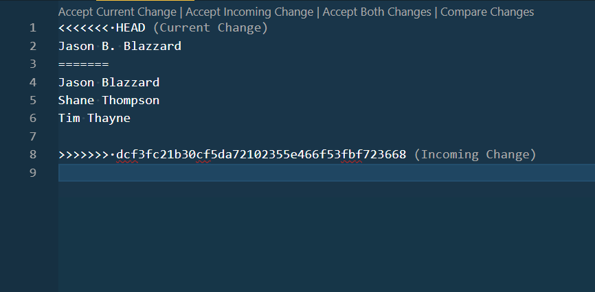

This activity will aid you in getting the project and environment
setup for your team. It will introduce a NodeJs based workflow and
development/build tools.
Instructions
Complete the following assignment as a team. Designate one team member
as the "main driver" and collaborate on their copy of the code.
Everyone on the team should be actively engaged in writing the code
and contributing to the solution. Once the solution is working, make
sure that everyone on the team gets a copy of the code. Each week let
someone else be the "main driver" of the coding.
It will be very helpful if you have completed the Sitepoint course on
Git It Together
before you do this.
If your group is ready to start the activity and you have not had a
chance to complete the course above...you can quickly review this
shorter Github guide
(Just remember to go back and do the other...it goes into much more
detail).
Core Requirements
Each member of the team should have already completed the
course setup
activity. Go and do that now if you have not.
The driver should visit the Team's copy of the project Trello
board and add each team member to the "Setup project for all
team members" task. Then move it to "Doing"
Make sure that you are familiar with how to use the command
prompt for your operating system. Here are some quickstarts
for the
command line for Mac
and the
command line for Windows
if you need a review.
The driver for this week should then log into Github, and
visit this
repository
for the project. Click on the "Use this template" button to
create a copy of the base project code in a new repository
then give the new repo a name.
The driver should then goto Settings->Manage Access and add
the rest of the team members as collaborators. (Each team
member needs to have their own Github account for this step.
Create one if you do not have one.)
Each member of the team should then clone the repository to
their computer.
Finish the project setup:
Each member of the team should then open a terminal window and
switch to the project directory (If you are using VS Code and
open the folder as the current project and type
ctrl ~ the terminal window will automatically be
set to the right directory.) then type npm install.
Notice that a new directory was created:
node_modules
This project comes with several tools built in to help the
team to write error free consistent code. The driver should
open up the package.json file. There are two
sections initially you should review.
devDependencies, and scripts.
devDependencies contains all of the tools we
will be using in our development for this project. When
you ran npm install earlier, it referred to
this list to know what to install.
scripts are shortcuts to commands we can run
to manage the project. It contains the following:
start: This will run our development server.
You will use this the most.
build: This will prepare our code to be
deployed to production. One person in your group should be
designated to run this as needed.
lint: This will run Eslint against the code
to look for style and syntax errors. You should do this
each time you are ready to commit. Make sure to clean up
any errors it finds before you commit!
format: This will run Prettier on your code
and format it all consistently. You should also do this as
a step in your commit process.
The commands are run in the terminal. If you wanted to start
up the development server for example you would type
npm run start. If you wanted to lint your code:
npm run lint
Try running the linter now. What did you see? Have the
driver open up the .eslintrc.json file. You may
have noticed that one of the errors it is complaining about
is that your quotes should all be single. You might be
saying to yourself..."why does that matter?" Well,
the truth is that it does not really matter whether you use
single or double quotes in your code. What matters is that
the whole team is consistent in using one or the other.
Decide as a team whether you would like to use single or
double quotes. Then find the line that looks like this:
"quotes":["error", "single"] in the
.eslintrc.json file. If you want single quotes
then make no changes. If you want double quotes then change
the word "single" to "double".
The .eslintrc.json file belongs to the team. If
your team disagrees with any of the rules that are being
enforced, change them! Just make sure that all the team
members are on board with the changes. If you do decide to
dig into setting up custom Eslint rules you might want to
get the LintLens extension for VSCode.
Next run npm run format. Then go and run the
linter again. What happened? Have the driver fix any
remaining errors , then commit and push the changes.
Each member of the team should run the format AND lint
command BEFORE they commit after making any changes.
If you are using VS Code there are extensions you can
install that will format (Prettier) and lint (ESLint) your
code everytime you save! Alternatively you could take
advantage of npm and scripts such as
prebuild
to further automate these tasks
Each person in the group should try running
npm run start. This runs several processes on our
code and launches a web server at localhost:8080.
It should also open that address in your default browser as
well, if it did not you can type that address directly into a
browser. You should use this server as you develop your
project instead of something like LiveServer!
When you are done working you can stop the dev server by
typing ctrl c in the same terminal window in
which the process is running. That will terminate it.
The driver should run npm run build. This will
create a directory called build. Commit those
changes and push them to Github. Then go back to the
repository at github.com and go to settings. Scroll
down the page until you see the section for Github Pages.
Select Branch: main in the source dropdown. Leave
the directory at /(root). Notice the URL to your
published site at the top of that section. Add a
build to the end of that URL and you should see
your built site.
The build version of the site will be considered
the production version. This should always work! The
instructor should be able to go to that address at any time
and not see any errors. One person in the team should take
on the responsibility of running the
npm run build command when the group decides that
it is time to incorporate new completed changes.
This will usually happen once a week after the pull requests
are reviewed and merged (More about pull requests below)
Github with a team
The driver should create a file in the root of the project
called team.txt and add the link to the team Trello
board, and their name. Then commit that change, and push it up
to Github.
Each other member of the team should pull the changes down and
add their names. Then commit and push.
The driver should then edit team.txt. Add your
middle initial. Then commit and push. What happened?
This should have resulted in an error with Git. There were
multiple changes made to the same file and Git doesn't
know which to keep! This results in a
merge conflict.
How can we avoid conflicts? A couple of ways:
First make sure whenever you sit down to work on the
project you should pull before you do anything
else to make sure you get changes any of your teammates
have made recently.
Commit often! Small commits are less likely to result in
conflicts than large ones...and they are much easier to
fix if a conflict does occur.
Take advantage of software design techniques like
modules
to break your code up into smaller pieces.
Finally take advantage of Git's ability to
branch. See the stretch goals for more on that.
Before you can commit the merge conflict will need to be
resolved. Make sure that the team.txt file is open.
You should see some additions to the file from Git. It should
look something like below.

We must decide which code should be kept. The code under the
<<<<<< HEAD is the code you were just trying to
send up. The code under the ========= is the
code that was already in Github. If you want to keep the
code you were just writing, and throw the other away you
could choose "Accept Current Change". If you wanted to keep
what was on Github and remove your recent changes choose
"Accept Incoming Changes". Or if you choose "Accept Both
Changes" it will smoosh both sets of changes together. This
is often the quickest way to get rid of the conflict, but is
usually requires more work to actually fix the problem.
In this case we should accept both, then delete the name
without the initial. That would leave us with the most
current versions of everything.
Once you fix the code you will need to commit the
merge...then you will be able to push your
changes to Github again.
This was a simple merge…easy to see what we needed to
keep…imagine if the file was 200-300 lines long, and two
team members had made edits in 10-15 lines of code scattered
across the file and caused a merge conflict! It would have
been far harder to figure out what to keep and what to
throw…KEEP your commits small!
Stretch Goals
Branching
One of the most powerful features of Git is the ability to
branch your code. Branching makes a copy of your code
at the current point in time that you can make changes to
without affecting any other branch! This allows an organization
to always keep a fully working production version of
their code that can be deployed at any time, and also work on
adding features, fixing bugs, etc that often result in things
breaking until they are done.
You can also use branches to reduce merge conflicts if multiple
team members need to make changes to the same file in a
codebase. Each team member should complete the following steps:
Create a branch. Name your branch something like
initials--branch_test. (So for me the actual name
of the branch would be st--branch_test)
Add a file in the root of the project called
yourname.txt. Type your name in the file.
Commit and publish (push) your branch to Github
Push your commit to Github...then do a pull after the other
members of the team have all pushed their branches.
Switch to one of the new branches in the repository. Notice
what happens to the listing of files in your editor when you
do. Switch back to your own branch. Switch back to the master
branch. Discuss with your team what you saw.
Throughout the semester you will be fixing bugs and adding
features to the SleepOutside site. When you assign a task to
yourself I would create a new branch to hold the work you will
do. Name the branch initials--feature-name. So if I
were going to work on the card dealing with the cart total not
calculating correctly, and my name were John Doe, I would make
a branch with a name something like
jd--cart-total-calculation
When you are done with your work and you are confident
everything is working you should submit a pull request (see
below). Each week your team will be responsible to setup a
meeting with the instructor (project owner) where the pull
requests will be reviewed and merged back into the project.
Pull requests
When you are done with the feature that you created a branch
for, the new code should be merged back into the master or main
branch. This can be done in two ways...one is by directly
merging the working branch back into the main branch, and the
other is through a pull request.
On projects where there is only one developer, merging directly
works fine...but when working with a team it is more common to
work through pull requests. A pull request essentially means "My
work is done and tested, I am ready for the code to be merged in
with the main branch. Can someone check it out and make sure you
don't see any issues. (So I don't break anything :)"
In our case right now, the branches do not contain anything
important that needs to be merged back into the main branch. So
most of them can just be deleted. Have one person however submit
a pull request for their branch so we can see what the process
is like.
After the pull request has been made (you can do this through
github.com) the driver should go to the repository in github and review
the request and then finish the merge. Make sure that any extra
branches are deleted once you are done merging.
Move the card in Trello to "Done"
Instructors Solution
No instructor's solution this week.
Submission
When you have finished this activity, please fill out the assessment
in I-Learn. You are welcome to complete any additional parts of this
activity by yourself or with others after your meeting before
submitting the assessment.